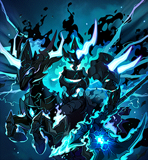

Checked-in boss knowledge
Baldrix
Magic Erosion never falls and 1000 ends the run. Keep room gauges low, avoid Magic Marks, and burn Squeezing Magic on afterimages.
- Boss level
- 290entry 290
- Defence (PDR)
- 380%
- Authentic Force
- 700
- Party
- Up to 3
- Recommended · Trio
- 108k–113kKMS + MapleSEA, MapleScouter
- Recommended · Duo
- ≈ 115k+KMS + MapleSEA, MapleScouter
- Recommended · Solo
- ≈ 131kKMS + MapleSEA, MapleScouter
HP
- Phase 1
- 3.62q
- Phase 2
- 3.85q
- Phase 3
- 6.31q
Overview
Room gauge at each rotation
- Under 250 · no Erosion
- 250+ · +20 Erosion
- 500+ · +50 Erosion
- 750+ · +70, penalty spreads
- 1000 · +90, penalty sticks
Per room, every 120s in Phases 1-2.
Phase 1 room penalties
- Baldrix-25/30% FD off the weak point
- SleipnirCorrupted zones 10% HP/s
- Ancient God15/20% of damage shared
Hit every room above 750; worse and stuck at 1000 until the rotation.
Trio Overflow into Erosion
- 3 Overflow
- ↓ +50
- 6 Overflow
- ↓ +100
- 8 Overflow
- ↓ +150
- 10 Overflow
- ↓ +200
- 12 Overflow
- ↓ +250
Added at each Phase 2 swap.
- Magic Erosion Shared and permanent; 1000 fails the run. Deaths add 200 / 100 / 70 (solo / duo / trio).
- Forced rotation Every 120s in Phases 1-2 the bosses shift one room (A Baldrix, B Sleipnir, C Ancient God become A Sleipnir, B Ancient God, C Baldrix) and room gauges become Erosion.
- HP split Roughly 26/28/46% across the phases.
Danger
- Room penalties Above 750 they spread to every room; at 1000 they worsen and stick.
- Soul Execution His hits deal 100% HP until afterimages drain you to 0. Never leave his Zone.
- Ancient God room +250 for two missed mirror shots in six; +500 when 4 (N) / 3 (H) rifts open.
- Magic Storm (Phase 2) Sweeps all three sides in turn; crouch it. Purple pillars/orbs are safe inside, blue ones are not.
- Sleipnir's chains They can stun-lock you; keep Hero's Will or a stun cleanse ready.
Tips
- Call gauges Before each rotation; stop trading gauge for damage near 250/500/750.
- Zone and weak point Fight in his Zone from the weak-point side. Immune ~5s after entry.
- Close rifts early Best while a statue is possessed; they cost 1, 2, then 3 stacks as they widen.
- Take afterimages Especially before Ragnarok; call yours. The triple swing's removes most.
- Pre-Ragnarok lull No Triple Swing, Triad Thunder or Zone 10-20s before it. Stay central.
- Under Soul Execution Meet hits with damage reduction, a shield or i-frames.
Phases
Forced rotation
Phase 1 · Three rooms room gauges
- Join order Join order, not the leader, sends players to Baldrix, Sleipnir or the Ancient God.
- Room gauge Drains 12/10/s while occupied, fills 8/s while empty, rises when you're hit.
- Portal Solo and duo get one to an empty room (NPC/Gather, 10s cooldown).
- Room penalties Above 750 a room's penalty spreads to every room; at 1000 it worsens and sticks until the rotation.
- Ancient God room +250 for two missed mirror shots in six; +500 once 4 (Normal) / 3 (Hard) rifts open. Close rifts early.
Phase 2 · Three sides personal gauge
- Centre, East, West Players split across the sides; no bind.
- Personal gauge Decays 5/4/s. At 1000, gain Overflow and a permanent Magic Mark.
- Marks (trio) 6/11/14 Marks copy extra patterns between sides.
- Magic Storm Sweeps all three sides in turn; crouch it and warn the next side. Purple pillars/orbs: stand inside; blue: stay out.
- No overflow Never reaching 1000 all phase earns a shield that blocks the first Ragnarok's +300.
Phase 3 · Together Squeezing Magic
- Squeezing Magic Personal, +6/7/s. Take purple afterimages (from 300) to lower it.
- At 1000 Drops to 600 and Soul Execution starts.
- Ragnarok Every 125 s (MapleSEA v246). +300 Squeezing Magic to all; he is immune ~5s.
- Soul Execution His hits deal 100% HP until afterimages drain you to 0; never leave his Zone.
- Pre-Ragnarok lull No Triple Swing, Triad Thunder or Zone 10-20s before it; take afterimages then.
Strategies
P1 room split
Low risk · Low damage requirementEvery party, set before entering.
- First to join goes to Baldrix, second to Sleipnir, third to the Ancient God; leave and rejoin to change the order. In a trio keep one player per room so every gauge drains.
- The split only lasts until the first 120 s rotation moves everyone on, so each player still learns every room.
- The Baldrix room needs steady uptime inside his Zone and on the weak-point side. Which room is hardest depends on player and class (the guide says Baldrix, KMS players say Sleipnir).
- The Sleipnir room wants a stun answer such as Hero's Will for chain stun-locks.
- The Ancient God room player keeps closing rifts and steers the mirror light onto the possessed statue.
Payoff Each player starts in the room that suits them.
Keep P2 mark-free
Medium risk · Medium damage requirementParties that can dodge Phase 2 without overflowing; the guide encourages it.
- Never let your personal gauge reach 1000 in Phase 2; each overflow adds a permanent Magic Mark.
- Crouch Magic Storm and warn the next side; the storm's portal shows where it goes next.
- Identify each pillar or orb pattern by its tell, then stand inside the purple safe area and keep out of the blue one; never tank a hit because it is purple.
Payoff A one-time shield that blocks the first Ragnarok's +300 in Phase 3.
Notes
- Limits 20 min · 10s potions.
- Separate rooms Party buffs don't reach each other until Phase 3.
- Talahart symbol Lv 11 +20% damage against him (MapleSEA v251).
- Unconfirmed names MapleSEA v246 confirms Ragnarok and Triad Thunder; other Phase 2-3 names, the portal and shield are not confirmed.
- Destiny Resolve per clear Normal 150 · Hard 450, split among entrants.
- HP estimates Overdrive HP is estimated from the published KMS reductions.
Recommended · Hard About 108k-113k for a full-timer minimum trio clear, depending on party composition (KMS release-era figures); a duo needs about 115k or more and solo about 131k (KMS plus MapleSEA and MapleScouter research).
Sources
Research checked .
- KMS 1.2.416 OVERDRIVE patch notesNexon Korea · official
- MapleStory Complete Baldrix GuideiSIingGunz · guide
- MapleSEA v244 patch notesNexon (MapleSEA) · official
- Inven - Baldrix guideInven contributors · guide
- Inven - Baldrix Phase 3 guideInven contributors · guide
- MapleTools - BaldrixMapleTools · tool
- MapleStory Wiki - BaldrixMapleStory Wiki contributors · wiki
- MapleSEA v252 content (Destiny Weapon 2nd Growth)Nexon SEA · official
- MapleStory Wiki - Destiny WeaponMapleStory Wiki contributors · wiki
- MapleSEA v246 patch notes (Ragnarok cooldown 125 s)Nexon (MapleSEA) · official
- Inven - Baldrix Phase 2 guide, part 1Inven contributors · guide
- Inven - Baldrix Phase 2 guide, part 2Inven contributors · guide